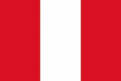

Paulo Monroy Cotrina
About Me
Hello everyone! My name is Paulo Monroy, and I am from Lima,Peru. I currently work as an appliance repair technician for Sansung, and I am studying Software Development at BYU-Idaho. During my mission in Argentina, I developed a love for mate and facturas, and I still enjoy them today.
Lima, Perú
Peru is a country in western South America known for its rich culture, ancient history, and beautiful landscapes. It is home to Machu Picchu, one of the New Seven Wonders of the World, and has part of the Amazon Rainforest, one of the most biodiverse regions on the planet.
